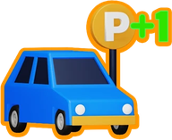

Jam Bus: Sandfall so với Royal Kingdom, Block Out, Goods Sort — bài học cho ABI
*Nguồn: các bài 01–05 và GDD Jam Bus; GDD/bài phân tích đã có của Royal Kingdom (E:/APKExport/RoyalKingdom_HExport/GameDesign: Lives, PlayOn, LevelFlow, analysis/02-deep-dive.md, 05-economy.md), Block Out (BlockOutColorSortPuzzle_HExport: PlayOn, Boosters, BlockPass, Store, Ads, LevelGeneration, analysis/02-core-loop.md, 04-economy.md), Goods Sort (GoodsSort_HExport: Lives, Difficulty, FailOffer, MasterPass, Shop, EndlessTreasure, SpecialGold, StarRush, CartRace, Ads, LevelProgression, Currencies). Số liệu của game khác lấy nguyên từ các tài liệu đó (thời điểm khảo sát khác nhau). Phần suy ra ghi "(suy luận)".*
1. Bốn game, bốn kiểu áp lực
| Jam Bus: Sandfall | Block Out | Goods Sort | Royal Kingdom | |
|---|---|---|---|---|
| Lõi | Lái xe khỏi bãi (Parking Jam) → đường vòng 5 chỗ → hút cát cùng màu | Trượt khối ra cửa cùng màu | Sắp hàng 3 món cùng loại trên kệ | Match-3 theo lượt |
| Nguồn áp lực | Số chỗ đường vòng | Đồng hồ (+ bom) | Đồng hồ (140–550 s) | Số lượt |
| Thua khi | Đường vòng kín + kẹt 0,5 s | Hết giờ / bom nổ | Hết giờ / kẹt | Hết lượt |
| Cứu ván | +1 chỗ,  900 coin phẳng, tối đa 5 lần 900 coin phẳng, tối đa 5 lần | +30 s, 900 → 1.900 → 2.900 coin | +30 s (Fail/Prefail Offer theo bậc) | +5 lượt, 900 → 4.900 coin |
| Engine | Cocos2d-x C++ | Unity | Unity | Unity |
Jam Bus là game duy nhất trong bốn không có đồng hồ và không có giới hạn lượt (LevelHUD: không có nơi cấp giờ cho khung m8). Người chơi thua vì quyết định sai, không vì chậm. Điều này kéo theo cả kinh tế: cứu ván không bán "thời gian" mà bán "chỗ", và mỗi chỗ mua thêm làm ván dễ hơn vĩnh viễn (5 → 10), nên giá không cần leo thang.
Bài học 1 — Áp lực theo tài nguyên không gian (chỗ, ô, kệ) thân thiện với người chơi casual hơn đồng hồ: không phạt người chơi chậm, vẫn phạt người chơi ẩu. Với game sort/jam mới của ABI, cân nhắc "buffer có giới hạn" thay cho timer, và bán mở rộng buffer thay cho bán giây.
2. Nội dung level
| Jam Bus | Block Out | Goods Sort | Royal Kingdom | |
|---|---|---|---|---|
| Level đóng gói | 25 bàn (57 cho 1 nhóm) × 225–230 tranh | 999 (bộ t212), server đổi bộ | ~4.500 baked + server stream; hết thì bốc ngẫu nhiên [500, 1000) | 5.600 |
| Cách tạo đa dạng | Ghép bàn × tranh + phân màu xe ngẫu nhiên mỗi lần chơi | File bố cục cố định | File cố định | File cố định + vá theo AB |
| Lặp lại | Bàn 6–25 lặp mỗi 20 level; cặp (bàn, tranh) lặp sau 900 level | Không (trong 999) | Có sau mức server | Không (trong 5.600) |
| Độ khó | Luôn Normal (FlowerCoreGame::getLevelDifficulty = 0); răng cưa từ mật độ bàn + nhịp tranh 1-1-1-2-3 | Theo bảng cấu hình màn + timer | Normal/Hard/VeryHard từ sheet server | Quy tắc tĩnh theo số level |
Jam Bus sản xuất nội dung rẻ nhất: hai thư viện nhỏ ghép với nhau, và thuật toán SandBusCarAllocator làm mỗi lần thử là một câu đố mới. Đổi lại: độ khó dài hạn phẳng, không tái lập được, và mất lớp "level Hard thưởng ×3" mà cả Block Out, Goods Sort, Royal Kingdom dùng để tạo đỉnh cảm xúc và đỉnh tiêu coin.
Bài học 2 — Tách "bố cục" và "màu/mục tiêu" thành hai dữ liệu độc lập, rồi gán màu bằng thuật toán theo độ khó mong muốn, là cách nhân nội dung ×10 cho game sort/jam. Nhưng nên cố định seed theo level (hoặc chỉ ngẫu nhiên khi chơi lại) để giữ được level "đinh" có thể chỉnh tay, và giữ nhãn Hard/Super Hard để có nhịp thưởng.
3. Thất bại và mạng
| Jam Bus | Block Out | Goods Sort | Royal Kingdom | |
|---|---|---|---|---|
| Mạng tối đa / hồi | 5 / 30 phút | 8 khi mua Block Pass; mạng vô hạn theo giờ trong bundle | 5 / 30 phút (8 với Master Pass) | 5 / 30 phút (8 với Kingdom Pass Gold) |
| Hết mạng | Không bao giờ dưới 1 (trừ nhóm 43 đã nạp); tặng  1 mạng sau 2–4 phút 1 mạng sau 2–4 phút | (không khảo sát) | Chặn; mua 800 vàng / QC / đồng đội | Chặn; 900 coin / đồng đội / QC (AB) |
| Giá cứu ván | 900 phẳng (+1 chỗ) | 900 → 1.900 → 2.900 | Offer bậc, mở L10 | 900 → 4.900 |
| Fail-safe | Không | (không khảo sát) | Có (FailSafeSheet theo độ khó) | — |
Jam Bus bỏ hẳn cổng mạng (Lives: leastLifeCounts = 1, LifeControl::scheduleSendGiftLife). Pass vẫn hứa «8 lives instead of 5» như Block Pass / Master Pass / Kingdom Pass — dấu vết của template thể loại, gần như vô nghĩa khi mạng không cạn. Lựa chọn này phù hợp mô hình QC: phiên dài hơn → nhiều QC xen kẽ hơn (sau giờ chơi đầu tiên) và nhiều QC thưởng hồi sinh hơn.
Bài học 3 — Nếu game sống bằng QC, cân nhắc "sàn mạng" thay cho cổng mạng: giữ phiên chơi, chuyển áp lực bán sang hồi sinh và booster. Nếu sống bằng IAP, đừng bỏ cổng mạng mà không có điểm bán thay thế — Jam Bus không có offer sau thua kiểu Goods Sort (Fail/Prefail Offer theo bậc), nên mất cả hai.
4. Pass, chuỗi, Special Gold: một bộ khung thể loại chung
| Tính năng | Jam Bus | Block Out | Goods Sort |
|---|---|---|---|
| Pass tháng | Bus Pass: L24, 31 bậc, 412 chìa, $9.99, Két 5.000 coin, «8 lives» | Block Pass: L50, 31 mốc, 1.014 chìa (×1/×3/×5 theo độ khó), Bonus Vault 5.000, 8 mạng, 263.000 ₫ | Master Pass: L24, theo tháng + chủ đề mùa, 8 mạng |
| Chuỗi gói nhận tuần tự | Paradise Perks: L30, T6–CN, 17 bước / 4 trả tiền | — | Endless Treasure: vòng lặp L30, xoay loại theo thứ |
| Gói vàng giá sốc | Special Gold: L15, cuối tuần, người chưa nạp, 6.000 coin $2.99 | — | Special Gold: L15, mỗi tuần một lần |
| Đua sao với bot | Star Match: L15, 5 người, 1 giờ | Jetpack Race / Streak Tournament | Star Rush: L15, bot client |
| Đua xe đẩy với bot | Shopping Marathon: L15, 5 xe, 10 chặng | — | Cart Race: L15, 4 bot, 24 giờ |
| Vòng quay | Roulette (LuckySpin): L21, 2 QC/ngày | — | Lucky Spin |
| Heo đất | Có UI, SKU không đăng ký | — | Piggy Bank |
Mức mở khoá trùng nhau đến từng con số (L15 cho Special Gold/đua sao/đua xe đẩy, L24 cho Pass, L30 cho chuỗi gói) và cấu trúc Pass 31 bậc + két 5.000 coin giống Block Pass cho thấy một bộ khung thể loại được sao chép rộng rãi (suy luận — không khẳng định cùng nhà phát triển; Jam Bus mang dấu Goods Match/Bus Go của chính studio: goods_merge_data_center_*, busgo.*). Khác biệt của Jam Bus nằm ở chỗ khung này chạy hoàn toàn ở client: Goods Sort lấy nội dung Master Pass, Fail Offer, Shop Gold từ sheet server; Jam Bus đóng gói tất cả trong JSON.
Bài học 4 — Với một studio có nhiều game cùng thể loại (như ABI), một "bộ khung LiveOps thể loại" (Pass 31 bậc, chuỗi gói, đua bot, Special Gold, vòng quay) có thể dùng lại gần nguyên vẹn. Nên tách thành module chung có config ngoài (Jam Bus làm điều này bằng actlib + JSON) và có kiểm tra tự động SKU ↔ store — Jam Bus có 94 mã IAP trong config không bán được.
5. Sự kiện và lịch
| Jam Bus | Block Out | Goods Sort | Royal Kingdom | |
|---|---|---|---|---|
| Nguồn lịch | Client: JSON + cửa sổ cứng + đồng hồ máy | Server | Server (EventLoop theo UTC) | Server (LiveopsEventType 31 loại) |
| Đối thủ đua | Bot client tính trước | Bot/streak | Bot client | Người thật + bot (theo loại) |
| Xoay vòng | 3 ngày (đua) + tuần (minigame) | Theo server | Theo server, theo thứ | Theo server |
| Sự kiện đội | Server, từ L63 | — | Team | Nhiều (Team Clash, Team Adventure…) |
| Thông báo | Không (API có, không nơi gọi) | Thông báo cục bộ hẹn giờ (9 loại) | (không có GDD riêng) | Có GDD Notifications |
Ưu điểm của mô hình Jam Bus: không cần đội LiveOps vận hành hằng ngày, sự kiện chạy offline, chi phí backend gần 0. Nhược điểm: không A/B được lịch, không có sự kiện mùa mới (bảng lễ 2024 đã hết hạn), không phản ứng được khi KPI xấu, đổi đồng hồ máy có thể tua sự kiện.
Ý tưởng sự kiện đáng học: Lava Treasure thưởng theo tốc độ (số bot sống sót phụ thuộc người chơi qua chặng nhanh hay chậm — LavaCtlRuntime::updateBots2NextStage) và Ice Cream Battle hệ số chuỗi 1-2-4-6-10 — cả hai tạo độ căng mà không cần level khó.
Bài học 5 — Giữ "lịch nền" chạy được offline (như Jam Bus) nhưng thêm một lớp ghi đè từ server (Remote Config / hot update) cho lịch và bảng thưởng. Jam Bus đã có hạ tầng (hot update ghi được UserDefault, RC có getter) nhưng chưa dùng cho sự kiện.
6. Quảng cáo và kiếm tiền
| Jam Bus | Block Out | Goods Sort | |
|---|---|---|---|
| Mediation | Tự làm (inhouse), waterfall + bidding + giá động XGBoost trên máy | AppLovin MAX | MAX |
| Interstitial | Chặn trong 3.600 s chơi đầu (ad_rule.json), cách ≥ 120 s | Server tắt (FirstLevelToShowInter 10000) | Từ L6, cách 120 s |
| Banner | 13 nhóm AB (không có nhóm 90) | — | Từ L3 |
| App open | Không (trang OnResume/GameLaunch rỗng) | — | Từ L3 |
| QC thưởng | Hồi sinh, booster, vòng quay 2 lượt/ngày | Coin/mạng/Play On | Ad Break, mạng |
| No Ads | $9.99, hiện từ L9 (trước QC xen kẽ đầu) | Trong bundle cao | Gói + Ads Subscription |
| Phân tầng IAP | Client: danh sách shop theo đơn lớn nhất, heo theo tổng nạp, quà tuần 9 tầng | Server | Server (SegmentPacks) |
Jam Bus đầu tư mạnh vào hạ tầng doanh thu QC (AdMediation: giá động với mô hình XGBoost chạy trên máy, bảng eCPM 162 nước; AdWorth: 119 sự kiện giá trị QC bắn cho Firebase/Facebook/Adjust để tối ưu UA) nhưng nhẹ tay ở trải nghiệm: một giờ đầu không QC bắt buộc. Lựa chọn "1 giờ sạch QC" là cách giữ D1 cho người mới — Block Out đi xa hơn (tắt hẳn), Goods Sort bật sớm (L6).
Bài học 6 — Mốc QC xen kẽ theo thời gian chơi (3.600 s) công bằng hơn theo level khi tốc độ chơi khác nhau. Nhưng popup No Ads nên dời sau QC xen kẽ đầu tiên — Jam Bus chào bán No Ads ở L9 khi người chơi chưa từng thấy QC bắt buộc.
7. Kinh tế
| Jam Bus | Block Out | Goods Sort | Royal Kingdom | |
|---|---|---|---|---|
| Tiền | Coin duy nhất | Coin | Vàng (+ tiền meta) | Coin + Potion (meta) |
| Khởi đầu | 1.000 coin, 2 mỗi booster | 3 mỗi booster | 1.000 vàng | 2.000 coin |
| Thắng level | 20 coin (luôn) | ~20 coin | (theo sao/giờ còn) | 10 × hệ số độ khó + lượt dư |
| Meta dài hạn | Album thẻ (2 tháng), Pass | Journey, Collection | Building meta | Xây vương quốc (Potion) |
| Sink chính | Hồi sinh 900, booster 300/900 | Play On, booster | Booster/tim 800, mở ô 1.000 | Play On 900–4.900, booster |
Jam Bus thiếu meta xây dựng/trang trí — coin không có chỗ tiêu dài hạn ngoài cứu ván, album thẻ là meta duy nhất (bài 03). Royal Kingdom dùng Potion như đồng hồ tiến trình tất định; Goods Sort có Building meta. Với game sort casual, thiếu meta thường làm giảm retention sau tháng đầu (suy luận).
8. Kỹ thuật và vận hành
- Cocos2d-x C++ + framework m8: Jam Bus thay lõi (từ hàng người sang tranh cát) mà giữ nguyên meta — 16 adapter của khung m8 không đổi. Dấu vết các game trước (Goods Match, Bus Go, Parking Jam, zuma) cho thấy studio tái dùng mạnh. Với ABI (Unity), tương đương là tách "meta package" khỏi "core package" bằng interface hẹp như
BQGameDelegateImpl::onGameOver. - Mọi thứ trên máy: save MMKV, không đồng bộ server bắt buộc (chỉ lưu đám mây tuỳ chọn qua Google Play Games). Rẻ nhưng không chống gian lận, không khôi phục khi mất máy nếu người chơi không bấm "Save Progress".
- Dọn template: 4/7 booster không có tác dụng trong Bus, popup đầu trận tắt, chuỗi thắng cộng giây cho ván không có đồng hồ, 240 bàn và 382 bảng sinh xe không dùng, 94 mã IAP không đăng ký. Chi phí bảo trì và nguồn lỗi cấu hình.
9. Tóm tắt khuyến nghị cho ABI
| # | Khuyến nghị | Từ đâu |
|---|---|---|
| 1 | Dùng buffer có giới hạn (chỗ/ô/kệ) làm nguồn áp lực chính thay timer; bán mở rộng buffer | Jam Bus đường vòng 5 → 10 |
| 2 | Tách bố cục và màu; gán màu bằng thuật toán theo độ khó, cố định seed theo level | SandBusCarAllocator |
| 3 | Giữ nhãn Hard/Super Hard và hệ số thưởng — Jam Bus mất nhịp cảm xúc khi bỏ | So với BO/GS/RK |
| 4 | Sàn mạng nếu sống bằng QC; nếu bán IAP, thêm offer sau thua theo bậc (Goods Sort) | Lives, FailOffer |
| 5 | Module LiveOps thể loại dùng chung (Pass 31 bậc, chuỗi gói, đua bot, Special Gold, vòng quay) với config ngoài + lớp ghi đè server | actlib, EventLoop GS |
| 6 | Bot client có "thưởng theo tốc độ" (Lava) và hệ số chuỗi (Ice Cream) — tạo độ căng không cần level khó | EventBots |
| 7 | Phân tầng IAP ở client (danh sách gọn theo đơn lớn nhất, quà theo tầng chi) khi chưa có backend phân khúc | Shop, DynamicWeeklyGift |
| 8 | QC xen kẽ theo thời gian chơi; No Ads sau QC đầu tiên | ad_rule.json, NoAds |
| 9 | Kiểm tra tự động: SKU có UI ↔ store, CSV ↔ JSON, cờ bật theo nhóm ↔ nhóm thật sự được gán | 94 SKU, quà tuần nhóm 45 |
| 10 | Thêm meta dài hạn (xây/trang trí) và thông báo cục bộ (mạng đầy, sự kiện sắp hết — như Block Out) | Thiếu ở Jam Bus |

